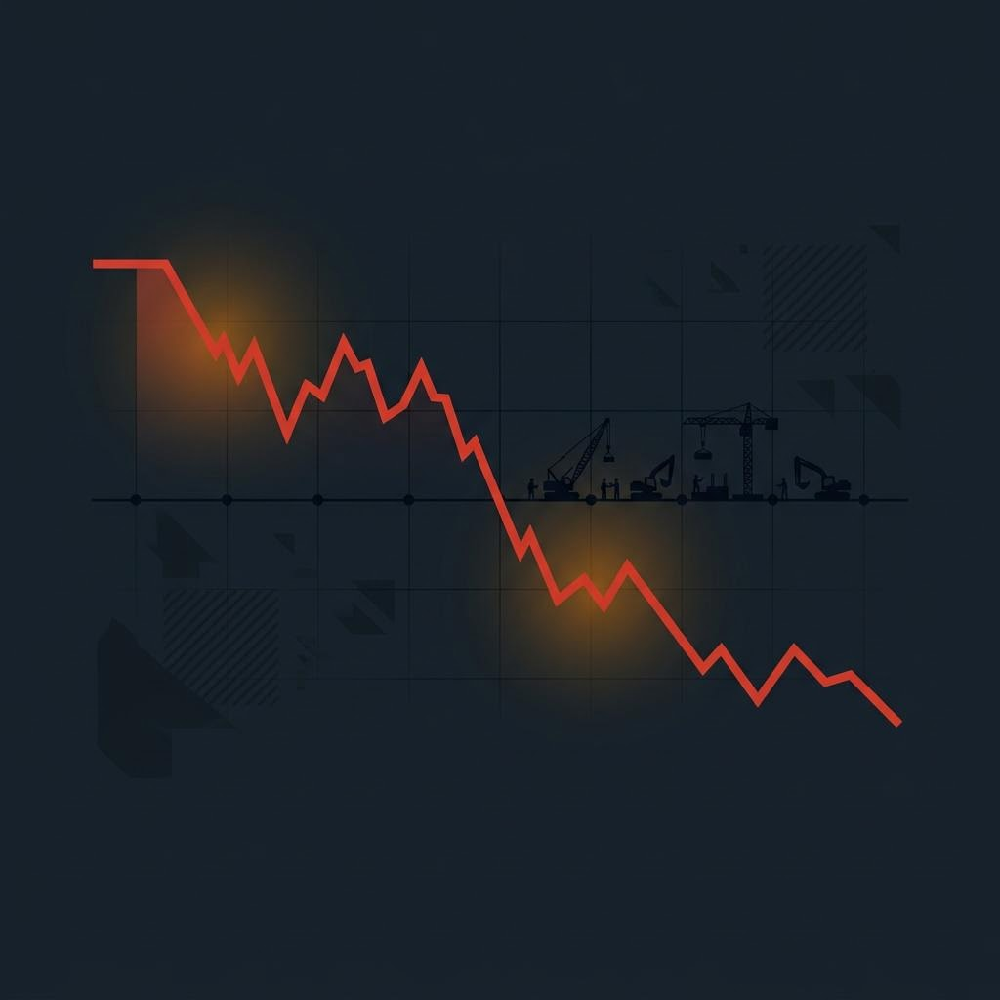

MINI EBOOK GRATIS · SERI CASHFLOW-PBJ
PROYEK ANDA UNTUNG Rp 420 JUTA.
REKENING ANDA MINUS Rp 1,1 MILIAR.
Bagaimana mungkin?
Sebuah diagnosis 15 menit untuk kontraktor yang lelah pura-pura baik-baik saja.
GUSTAFTA · SOLUSI CERDAS KONTRAKTOR INDONESIA
Sebelum Anda Baca Lebih Jauh
Ebook ini BUKAN untuk Anda jika:
— Termin Anda selalu cair tepat waktu.
— Subkon tidak pernah menagih dengan nada tinggi.
— Kas perusahaan tidak pernah membuat Anda begadang.
— Anda belum pernah menjawab telepon supplier sambil berkata, "Iya Pak, minggu depan saya transfer," padahal di rekening tersisa Rp 12 juta.
Jika empat poin di atas tidak ada yang mengenai Anda — tutup ebook ini. Anda tidak butuh saya. Selamat bekerja.
Tapi jika satu saja membuat dada Anda sesak saat membacanya —
Lanjutkan. Dan jangan skip.
Karena 15 menit ke depan akan mengubah cara Anda melihat setiap proyek yang Anda pegang.
KAS MERAH, RAB HIJAU
2
Bab 1 — Tamparan Angka
Satu Proyek. Satu Kontraktor. Satu Kebangkrutan yang Tidak Perlu Terjadi.
Namanya tidak penting. Sebut saja Pak R. CV-nya sudah 9 tahun. Proyek pemerintah. Nilai kontrak: Rp 3,5 Miliar.
Di RAB, profit margin 12%. Di atas kertas: Rp 420 juta. Pak R tanda tangan kontrak dengan tangan mantap.
Ini yang terjadi kemudian:
| Bulan | Kas Keluar | Kas Masuk | Saldo |
|---|
| 1 | Rp 520 jt (mobilisasi, DP material) | Rp 700 jt (DP 20%) | +Rp 180 jt ✓ |
| 2 | Rp 480 jt | Rp 0 | –Rp 300 jt |
| 3 | Rp 450 jt | Rp 0 | –Rp 750 jt |
| 4 | Rp 350 jt | Rp 0 | –Rp 1,1 M ● |

KAS MERAH, RAB HIJAU
3
Termin pertama belum cair. BAST belum ditandatangani. PPK bilang, "Berkasnya masih di verifikasi, Pak. Sabar ya."
Sementara itu:
— 14 tukang belum digaji 3 minggu.
— Supplier besi mengirim WA: "Maaf Pak, pengiriman saya stop dulu."
— Subkon pondasi mengirim somasi.
Proyeknya untung Rp 420 juta.
Perusahaannya sesak napas di minus Rp 1,1 miliar.
Dan Pak R tidak bodoh. Pak R tidak malas. Pak R sudah 9 tahun di lapangan.
Pak R hanya tidak pernah diberi tahu bahwa profit dan cash flow adalah dua binatang yang berbeda. Dan tidak ada satu pun sistem di mejanya yang memberitahu dia di bulan ke-2 bahwa bulan ke-4 akan seperti ini.
Jika Anda pernah berada di posisi Pak R — atau sedang di sana sekarang — lanjutkan membaca.
KAS MERAH, RAB HIJAU
4
Bab 2 — Lima Akar Masalah
Bukan "Kesialan". Bukan "Ekonomi Lesu". Ini Strukturnya.
①
Profit ≠ Cash Flow.
RAB bilang untung. Rekening bilang kosong. Biaya konstruksi front-loaded (menggunung di awal). Pendapatan back-loaded (cair belakangan, per termin). Jarak antara keduanya adalah jurang tempat kontraktor jatuh.
②
Kontrak Anda asimetris.
Di proyek pemerintah, draf kontrak disusun PPK. Anda tidak negosiasi. Anda menerima. Atau gugur. Risiko keterlambatan pencairan otomatis "diparkir" di pundak Anda. Padahal UU No. 2/2017 dan Perpres 46/2025 memberi Anda hak yang jarang Anda baca.
③
Tidak ada buffer.
Anda memulai proyek dengan DP sebagai satu-satunya amunisi. DP habis di bulan pertama. Setelah itu, proyek berjalan dengan harapan bahwa termin cair tepat waktu. Harapan bukan instrumen keuangan.
KAS MERAH, RAB HIJAU
5
④
Birokrasi negara dirancang hati-hati, bukan cepat.
Opname → BAST → SPP → SPM → SP2D → KPPN. Setiap anak panah = potensi delay 7–14 hari kerja. PPK bukan musuh Anda. Dia hanya manusia yang takut tanda tangannya jadi temuan BPK.
⑤
Anda mengelola dengan insting, bukan sistem.
Tidak ada tracker. Tidak ada triage. Tidak ada protocol. Yang ada: telepon, emosi, dan "nanti saya pikirkan."
Lima akar ini bukan teori. Ini sedang bekerja di proyek Anda sekarang.
Pertanyaannya bukan apakah ini masalah Anda.
Pertanyaannya: apa yang Anda lakukan setelah tahu?
KAS MERAH, RAB HIJAU
6
Bab 3 — Cermin
Tiga Keputusan yang Anda Kira Menyelamatkan — Padahal Membunuh.
Kas minus. Telepon berdering. Otak reptil Anda menyala. Dan Anda melakukan satu dari tiga hal ini — atau ketiganya sekaligus:
① Ambil proyek baru.
DP-nya langsung tersedot ke proyek lama. Sekarang Anda punya dua proyek sekarat, bukan satu.
Probabilitas selamat dalam 12 bulan turun ke ~15%.
② "Pakai dulu."
Rekening perusahaan = rekening pribadi. Rp 200 juta "hilang" tanpa jejak. Bulan depan, upah tukang tidak terbayar — dan Anda bahkan tidak bisa menjelaskan ke mana uangnya pergi.
KAS MERAH, RAB HIJAU
7
③ Potong kompas.
Jual ekskavator Rp 400 juta (beli Rp 850 juta). Pinjam rentenir 6%/bulan. Atau — yang paling gelap — kurangi spek material dan gelembungkan volume di laporan progres.
Yang terakhir bukan masalah bisnis. Itu Pasal 78 Perpres 46/2025 dan UU Tipikor. Empat sampai dua puluh tahun.
Anda tidak butuh keberanian untuk bertahan.
Anda butuh sistem yang membuat keberanian itu tidak perlu.
Sistemnya ada. Saya jelaskan di Bab 5. Tapi jangan loncat ke sana. Baca dulu halaman berikutnya.
KAS MERAH, RAB HIJAU
8
Bab 4 — PPK Bukan Musuh Anda
(Tapi Anda Selama Ini Menagih dengan Cara yang Salah)
Anda marah pada PPK karena termin telat. Anda telepon. Anda WA. Anda datang ke kantor. Anda bilang, "Pak, ini sudah lewat jatuh tempo."
Dan PPK tersenyum sopan, mengangguk, lalu berkata, "Iya Pak, sedang diproses," — dan tidak ada yang berubah selama 3 minggu berikutnya.
Bukan karena PPK jahat. Bukan karena dia tidak peduli. Tapi karena setiap rupiah yang keluar dari KPPN harus lolos audit. Tanda tangan PPK ada di atas berkas itu. Jika satu dokumen kurang rapi, beliau yang kena TGR. Pribadi. Bukan perusahaan. Bukan negara. Beliau.
Jadi PPK akan selalu memilih: lambat tapi aman, daripada cepat tapi berisiko.
KAS MERAH, RAB HIJAU
9
Anda tidak bisa mengubah desain itu. Anda tidak perlu mengubahnya.
Yang perlu Anda lakukan adalah memberi PPK alasan untuk cepat. Dan alasan itu bukan telepon. Bukan WA. Bukan kunjungan.
Alasan itu adalah satu dokumen. Dokumen yang membuat berkas Anda zero-defect — BAST rapi, back-up data ukur lengkap, faktur pajak benar, tidak ada satu pun celah untuk ditahan.
Dokumen itu bernama __________.
(Ya. Saya kosongkan. Sengaja. Anda akan tahu namanya di versi lengkap.)
Kontraktor yang dokumennya zero-defect tidak perlu menagih.
PPK yang memproses berkasnya sendiri yang menelepon: "Pak, SP2D-nya sudah cair."
KAS MERAH, RAB HIJAU
10
Bab 5 — Sistemnya Ada. Tapi Bukan di Sini.
Tiga Lapisan yang Membedakan Kontraktor Bertahan vs. Kontraktor Bertumbuh.
1 · CASH TRIAGE MATRIX
Saat kas tinggal Rp 80 juta tapi tagihan antre Rp 400 juta — ini yang memutuskan siapa dibayar duluan, siapa dinegosiasi, siapa yang bisa tunggu. Tanpa emosi. Tanpa telepon panik jam 11 malam.
TERKUNCIDi versi lengkap: matriks 4 kuadran + script negosiasi copy-paste untuk subkon dan supplier.
KAS MERAH, RAB HIJAU
11
2 · TERMIN TRACKER 7-TITIK
Anda tahu tagihan Anda di meja siapa, hari ke berapa, berapa hari lagi sebelum SP2D cair. Bukan menebak. Bukan "nanti saya tanya PPK." Tapi dashboard dengan 7 checkpoint dari Opname sampai rekening Anda.
TERKUNCIDi versi lengkap: template Excel + Notion, SOP follow-up per titik, dan kalimat WhatsApp yang membuat PPK merespons dalam 2 jam.
3 · BUFFER PROTOCOL 10–15%
Menjawab pertanyaan paling brutal: "Kalau termin telat 8 minggu, perusahaan saya masih hidup atau langsung mati?" Dengan angka pasti. Bukan perasaan.
TERKUNCIDi versi lengkap: rumus kalkulasi berdasarkan durasi proyek + siklus APBN/APBD, dan kapan boleh "memakai" buffer tanpa merusak sistem.
Ketiganya bukan tips terpisah. Mereka satu mesin. Memberikan satu potongan tanpa dua lainnya seperti memberi setir tanpa mesin dan roda. Anda putar sekeras apa pun. Mobilnya tidak jalan.
KAS MERAH, RAB HIJAU
12
Anda sekarang tahu.
Yang belum Anda punya: sistemnya.
- ✓ Akar masalahnya.
- ✓ Tiga kesalahan yang mempercepat kematian.
- ✓ PPK bukan musuh — Anda yang menagih di tempat yang salah.
- ✓ Sistemnya ADA.
- ✕ Matriksnya. ✕ Template-nya. ✕ Script-nya. ✕ Protocol-nya.
Jarak antara "tahu" dan "punya" adalah jarak antara kontraktor yang membaca ebook ini sambil deg-degan — dan kontraktor yang tidur nyenyak karena kasnya aman 8 minggu ke depan.
KAS MERAH, RAB HIJAU — VERSI LENGKAP
9 Bab + 6 Lampiran · Cash Triage Matrix · Termin Tracker 7-Titik · Buffer Protocol Calculator · 12 Template Surat & WhatsApp Resmi untuk PPK, KPPN, dan Subkon · SOP Eskalasi Bertahap.
AMBIL VERSI LENGKAP →
gustafta.my.id/ebook-kas-merah
Tentang Ebook Ini
Ebook ini disusun oleh tim CASHFLOW-PBJ — Gustafta, yang mendampingi kontraktor UKM di proyek pemerintah. Ditulis bukan dari ruang kuliah — tapi dari meja proyek, telepon subkon yang menagih, dan malam-malam di mana kas minus dan besok harus bayar upah.
Jika versi pancingan ini membuat Anda tidak bisa tidur — bayangkan apa yang versi lengkapnya lakukan.
WA 0812-8794-1900 · gustafta.my.id/cashflow-pbj
© 2026 Gustafta — Solusi Cerdas Kontraktor Indonesia. Dilarang memperbanyak tanpa izin.